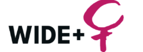

Migrantkvinnor leder förändring: Stärkt demokratiskt deltagande, ledarskap och kollektiv handling i Göteborg
Vi stärker migrantkvinnors demokratiska deltagande, ledarskap och synlighet samtidigt som vi bygger hållbara nätverk för långsiktig kollektiv handling.
Göteborg, Sverige
Augusti – November 2026
60 migrantkvinnor

WIDE+ Network
Om projektet
Migrantkvinnor möter ofta hinder såsom begränsad tillgång till beslutsfattande forum, språkliga utmaningar, social exkludering och diskriminering. Dessa hinder kan bidra till att de är underrepresenterade i demokratiska processer och ledande roller.
Samtidigt har migrantkvinnor värdefulla erfarenheter, kunskaper och färdigheter som kan bidra betydligt till mer inkluderande och demokratiska samhällen.
Projektet syftar till att stärka demokratiskt deltagande, ledarskap och synlighet bland migrantkvinnor i Göteborg, samtidigt som det främjar ett starkare samarbete mellan migrantledda organisationer, kvinnorättsorganisationer och WIDE+:s medlemsorganisationer.